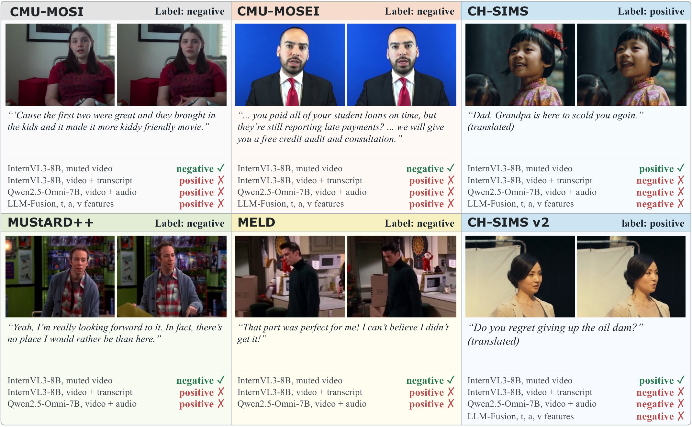
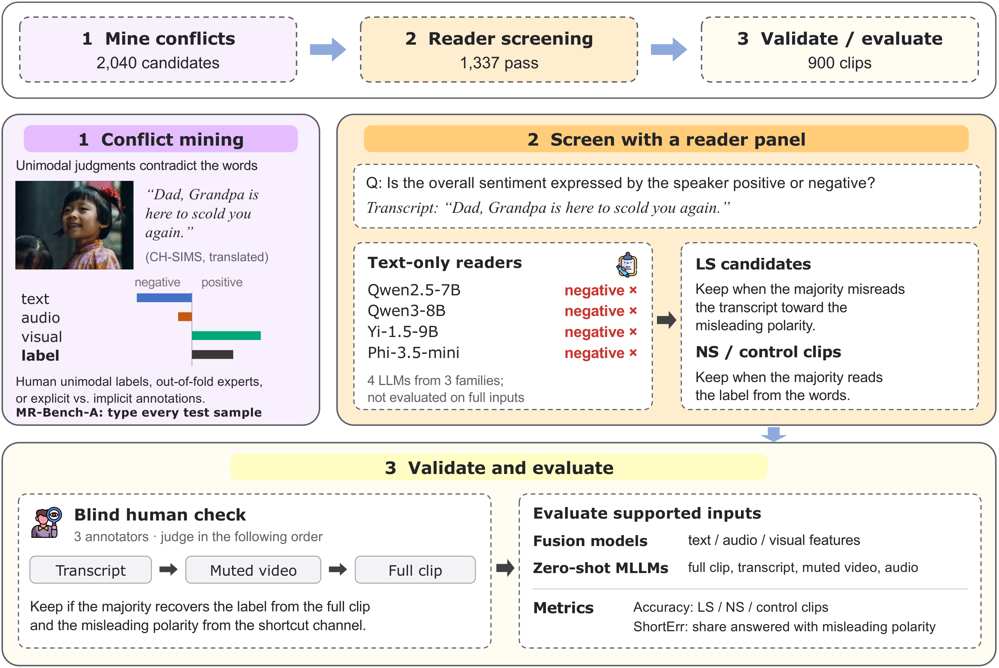
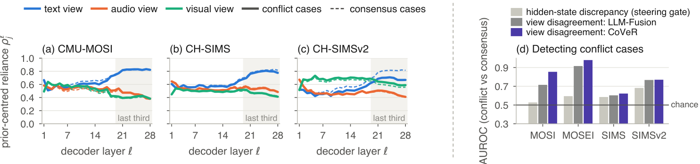
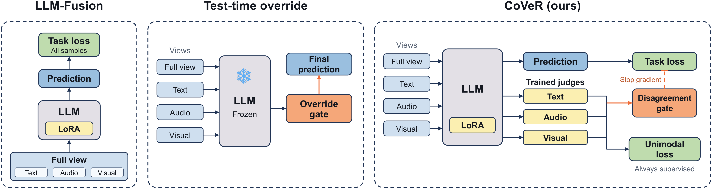

Words Speak Louder?
Exploring the language shortcut of LLM-driven incomplete multimodal learning
1Shandong University · 2Shenzhen Loop Area Institute · 3The Hong Kong Polytechnic University · 4National University of Singapore · 5City University of Hong Kong

Figure 1 in the paper
Position
Is a face or a voice still heard once the words are known?
Incomplete multimodal learning increasingly uses large language models as fusion engines: modality features enter as token blocks and missing modalities become placeholders. We find that LLM-driven fusion can override non-verbal evidence it can read. Contrasting its full-input prediction with counterfactual views, the same model shown one modality or no content, we identify language shortcuts.
The problem
Models follow the words
The muted video shows that the evidence is visible: three vision–language models solve 61.1–68.9% of the language-shortcut clips from the muted video alone, and 13.2–21.6% once the transcript is added.
LS accuracy (%). Accuracy falls by 47.9, 46.1 and 53.1 points for Qwen2.5-VL, InternVL3 and LLaVA-OV, respectively.
Figure S2 in the paperZero-shot MLLMs solve 5.5–32.7% of the LS clips, all far below chance, although they solve 89.6–99.3% of the NS clips, whose words carry the label. ShortErr, the share of LS clips answered with the misleading polarity of the words, is 66.9–94.4%.
The benchmark
MR-Bench: finding modality-conflict cases
We call inputs on which the fused prediction follows the words while the non-verbal evidence and the label say otherwise language-shortcut cases, and find them without relying on the model under study, through unimodal judgments: human labels of what each modality conveys on its own, or out-of-fold single-modality experts.
MR-Bench-A types every test sample of CMU-MOSI, CMU-MOSEI, CH-SIMS and CH-SIMSv2 by its unimodal judgments. MR-Bench-H contains 900 human-validated clips (620 language-shortcut, LS; 280 non-verbal-shortcut, NS) from seven sources, and every model is scored on all of them.

Figure 2 in the paper
Each clip asks one deliberately simple question, “Is the overall sentiment expressed by the speaker positive or negative?”, so that a failure cannot be attributed to the difficulty of the task. Annotator agreement is Fleiss' κ = 0.75.
Table S4 in the paperBenchmark results
Every model is scored on all 900 clips
T: transcript, A: audio, V: video. Fusion models are trained on the training split of each source and averaged over three seeds; they inherit its label prior, so they are compared within their family.
Figure 3 and Table S5 in the paperLS accuracy alone is insufficient
The text-only model solves 34 of the 620 LS clips (5.5%); reversing its answers solves 94.4% of them without audio or video, but only 0.7% of the NS clips. LS accuracy alone therefore cannot prove the use of non-verbal evidence: we read it together with NS accuracy and with paired views of the same model.
Systematic failures of LLM-driven fusion
The model fails exactly where the modalities disagree
With all modalities observed, LLM-Fusion is right on 90–98% of the consensus cases but only on 17–59% of the conflict cases of MR-Bench-A, and 41–83% of its predictions on these cases follow the polarity of the text. The failure is not a lack of evidence: the same model, evaluated without text, solves 63–87% of the conflict cases.
Test-split consensus (Cons.) and conflict (Conf.) counts and, with all modalities observed, Acc2 on both case types, ShortErr (SE) and conflict Acc2 of the same model without text (w/o t) and of its visual-only view, in %; mean over 3 seeds.
Table S3 in the paper
Figure 4 in the paper
A larger language model does not solve the problem: with five decoder-only LLMs from 0.5B to 1.7B parameters on CH-SIMS, every backbone still follows the text on 53–65% of the conflict cases, although it solves 63–73% of them once the text is removed.
Counterfactual-View Reliability learning
CoVeR: views as trained judges
The prediction-level disagreement of counterfactual views provides a direct signal of conflicting evidence. CoVeR keeps the architecture, the inputs and the inference procedure of LLM-driven fusion unchanged and modifies only how it is trained: the views are trained as unimodal judges, and their disagreement decides which samples supervise the fused path.

Labels are normalised to [0, 1], so the neutral point is c = 0.5; the hatched band is the margin τ/2 around it. A non-text view confidently disagrees if it has the opposite polarity of the text view and lies outside the band.
The CoVeR objective
If no judge disagrees, the fused path is trained as usual; if a judge disagrees, ỹ is a constant and the fused path receives no task gradient from that sample, whereas all views keep their unimodal supervision. At test time, accuracy mode outputs ŷ of the full view in one forward pass with the parameters and the cost of LLM-Fusion; the optional robust mode applies the gate with trained judges.
Results
State-of-the-art results on five benchmarks
CoVeR achieves the best Acc2, F1 and correlation and the lowest MAE on all four MMSA benchmarks and on IEMOCAP against nine incomplete multimodal learning methods re-run under one protocol, although, like LLM-Fusion, it never reads the features of a missing modality.
Avg Corr (×100), Acc2 on consensus (Cons.) and conflict (Conf.) cases and ShortErr (SE), in %. Mean over 5 seeds. Fixed-threshold discrepancy steering barely changes ShortErr; test-time override trades consensus accuracy for conflict accuracy.
Table 1 in the paperUnimodal supervision without the gate improves Avg Corr by 2.6 points and conflict accuracy by 2.6 points over LLM-Fusion. Adding the disagreement gate gains a further 2.9 Corr points and 6.4 conflict points.
Table 3 in the paperCollapse and cost. CoVeR weakens the collapse: the late-layer text reliance on conflict cases drops from 0.81 to 0.74 (CMU-MOSI) and 0.77 to 0.72 (CH-SIMS). Accuracy-mode inference costs the same as LLM-Fusion (4.0 ms per clip on an RTX 4090); a training epoch takes 5.7× as long and robust mode 6× the latency.
Limitations. The CMU-MOSI/MOSEI conflict sets of MR-Bench-A are model-judged and small, MR-Bench-H holds only model-detectable shortcuts, and CoVeR needs unimodal labels and a known dominant modality.
Cite
BibTeX
@article{li2026words,
title = {Words Speak Louder? Exploring the Language Shortcut of LLM-Driven Incomplete Multimodal Learning},
author = {Li, Wenhao and Xiao, Chong and Bai, Xiaokun and He, Rundong and Qi, Zhuang and Liang, Xusheng and Wu, Zhibin and Wang, Qiangchang},
year = {2026}
}